Requirements
Software
Hardware
- VR Capable PC or Laptop (please see your headset's recommended specifications)
- SteamVR Compatible Headset (HTC Vive, Valve Index, Varjo)
- Vive Trackers 1.0 or later (You can use 1 or 2 trackers depending on how many gloves you are using)
Please note: To attach the Vive Trackers to the Glove via the Velcro Strap you must have adhesive velcro tape on the bottom of the Vive Tracker) - Base Stations (we recommend at least 2x Base Station 2.0 or later)
Setting up SteamVR and Vive Trackers
-
Download and Install the Steam Desktop client and SteamVR. Launch SteamVR and let it run the first time setup.
NOTE: For this example, we are using SteamVR Version 1.16.10 with an HTC Vive Pro, 3x Base Station 2.0s, and 2x Vive Tracker 2.0s
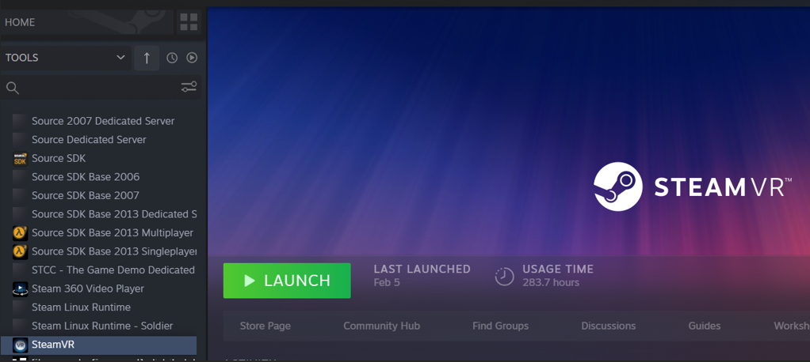
- Connect your Headset and Base Stations, conduct the Room Setup, and Pair your Vive trackers as per the device's instructions. Once the Vive Trackers are paired right-click on one of the trackers and click Manage Vive Trackers (see image below).
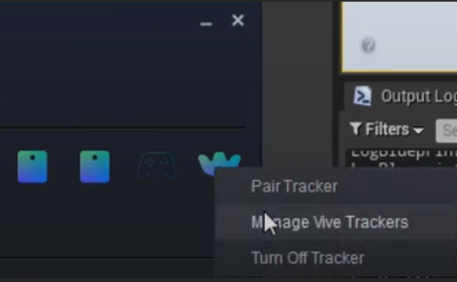
In the Steam VR settings select Manage Vive Trackers (see below)
For the connected Vive Trackers, keep the Tracker Role set to Held in Hand. Assign the Hand to correspond with the glove to which you'll attach the Tracker, for example, Left Hand for a left glove. Click Close and exit the SteamVR settings.
- Leave Steam VR running in the background and begin to set up your Unreal Project.
Setting up your Unreal Project with Hand Engine
-
Download and Install the StretchSense Hand Engine and Unreal Engine
-
-
Launch Unreal Editor 5.0 or higher and create a new project (skip this step if you have an existing project).
Choose the Games category on the left, then select the Blank template.
In the Project Defaults section on the right, choose the C++ option.
Name your project, note the Project Location directory, and click Create.
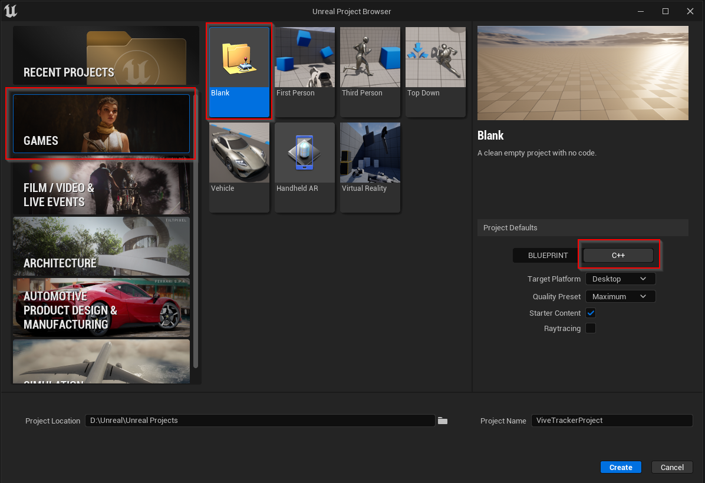
-
Go to the Project Location directory on your disk.
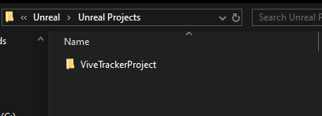
-
Access the Plugins folder in your project. Create one if it doesn't exist.
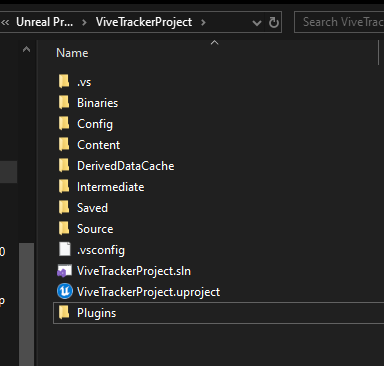
-
Extract the HandEngineLiveLink folder from the StretchSense_Studio_Unreal_V.X.X.X zip file, located in the StretchSense_Studio_Unreal_VX.X.X/5.0 directory, and place it into your project's Plugins folder.
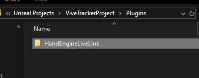
-
Reopen your project using Unreal Editor 5
-
Navigate to Edit → Plugins and activate the following plugins:
HandEngineLiveLink
Live Link
Live Link Control Rig
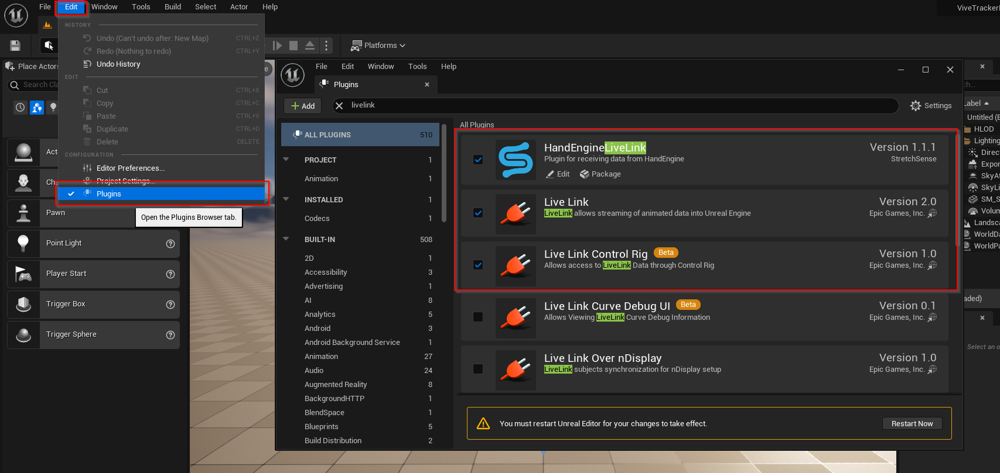
-
To make all plugin content visible in your project hierarchy, open the Content Browser in your project, click the Settings button at the top right, and ensure all items under the Content category are selected.
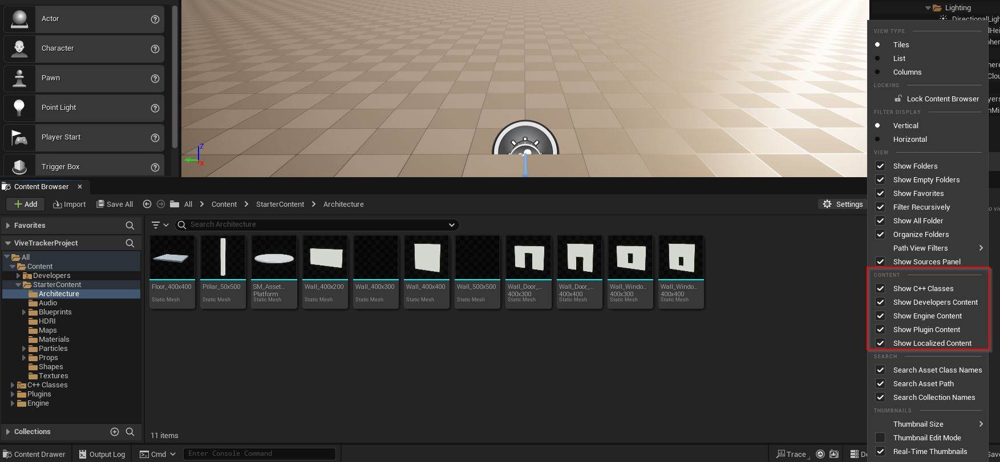
-
With your project now configured to work with Hand Engine, you're ready to integrate hand data with the tracker motion source.
# Setting Up VR Pawn to use Trackers and Gloves
Streaming from HandEngine to Unreal
-
First, let's stream the hands into Unreal by adding a Hand Engine Live Link device to your scene:
In your Unreal project, navigate to Window → Virtual Production → Live Link.
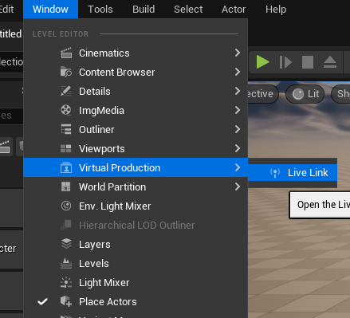
Click +Source, select HandEngine, and click OK. After a few seconds, Default_Left and Default_Right should appear with green lights under HandEngineLiveLink in the Subject pane.
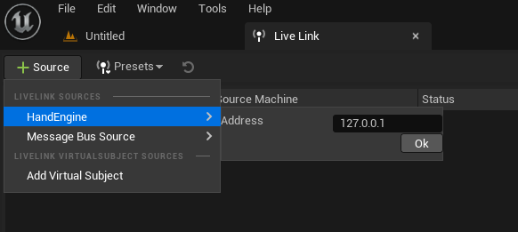
The Live Link window can now be closed or minimized.
Creating a 'Hand Only' Animation Blueprint
1. Next, we'll create a simple Hand Animation Blueprint to display the animation data on our VR pawn.
In the Content Browser, click Import and load the Hands.fbx asset. You can find the Hands.fbx asset in the Assets folder of the Hand Engine installation directory or download it from the download section of your account page.
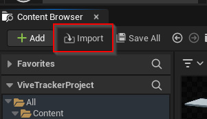
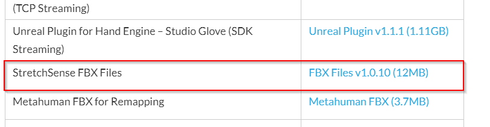
2. Right-click one of the newly imported Skeletal Meshes (Right or Left Hand) in the Content Browser and choose Create > Anim Blueprint.
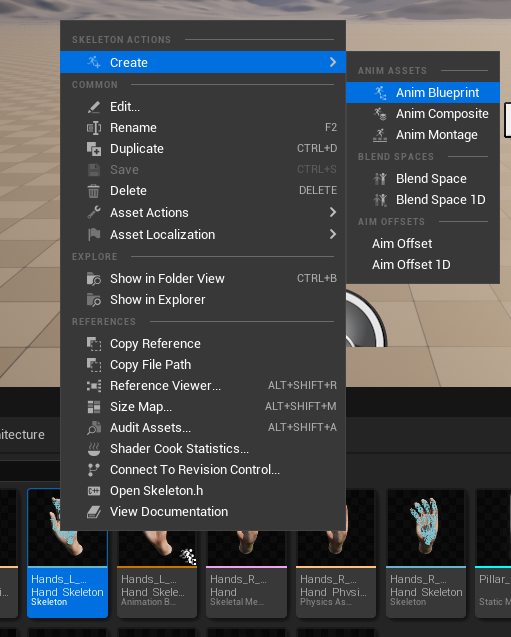
3. Open the created Anim Blueprint, right-click in the empty space, and select Live Link Pose.
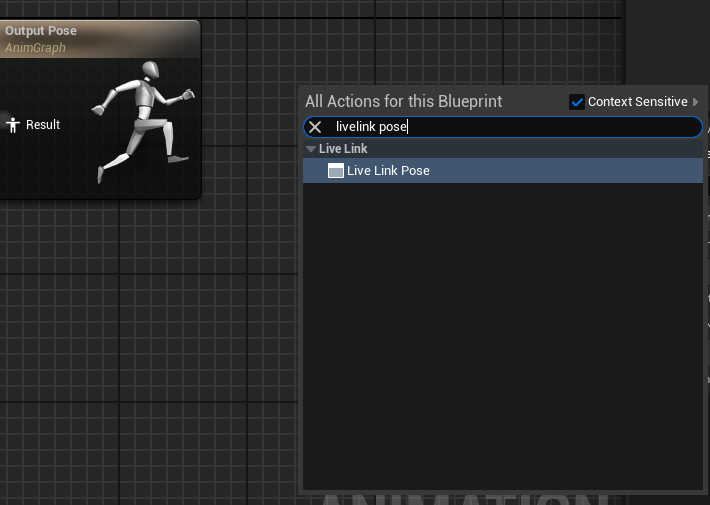
4. Choose the live link performer for the hand you are creating.
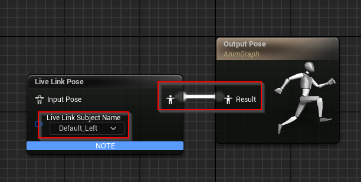
5. Click on Compile and the hand asset should now be moving in the preview window. Repeat these steps for the other hand.
Creating a VR Pawn to Combine Hands and Tracker Position
-
Now, let's create a new Pawn Blueprint Class to merge the tracker and hand data.
From the content browser, select Add New and then choose Blueprint Class. Name it, for example, VRPawn.
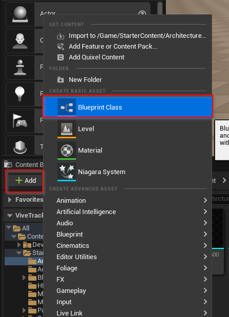
2. Open the new Pawn Blueprint. In the Components tab, select the VRPawn(self). Then, in the Details panel under the Pawn settings, change the Auto Possess Player from Disabled to Player 0.
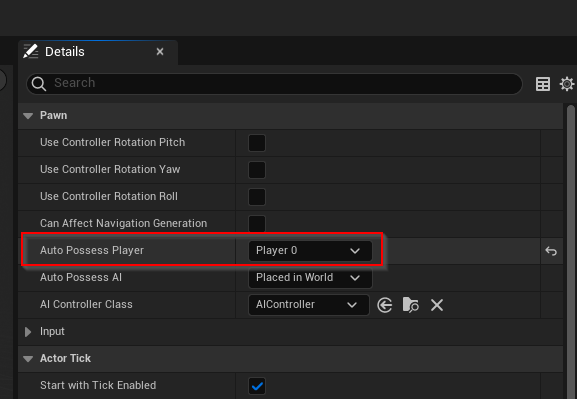
3. In the Components tab, add a Scene component, rename it to VRCameraRoot, and continue. If you are unable to see the Components tab you will have to enable it in Windows -> Components
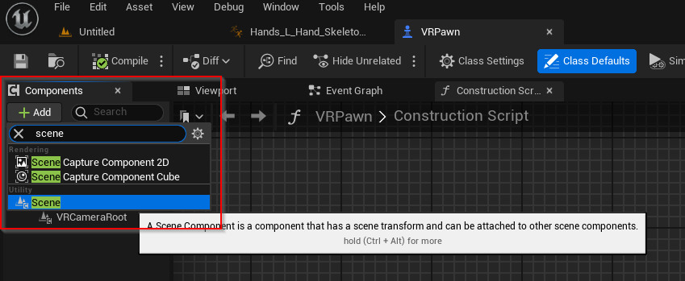
4. Next, while in the Event Graph tab drag off the Event Begin Play node to show the Executable Actions list. In the list search for the Set Tracking Origin node and click on it to add it to the Event Graph. The Set Tracking Origin node has two options, Floor Level and Eye Level. For a standing experience, you will need to leave the Origin of the Set Tracking Origin node to the default of Floor Level.
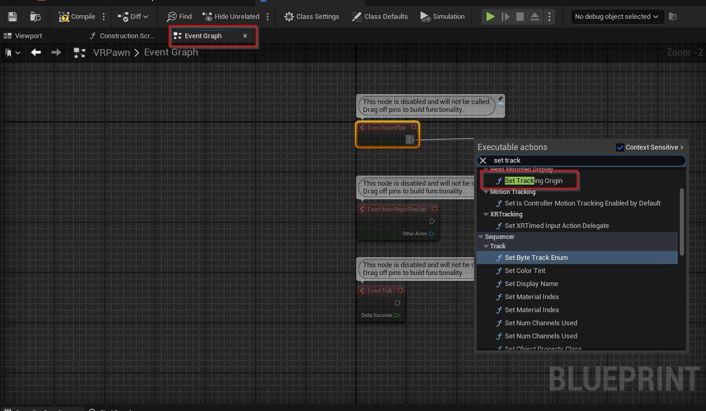
5. Go back to the Component tab. From there add a MotionController component as a child of DefaultSceneRoot. It is good practice to rename the MotionController to reflect what hand it will be tracking.
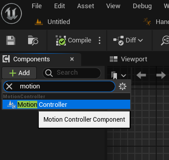
NOTE: In the Details panel under the Motion Controller section, the Motion Source to match the corresponding tracker source (Left or Right)
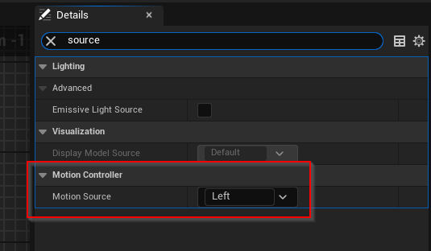
6. Go back to the Component tab. From there add a SkeletalMesh component as a child of MotionController (see below).
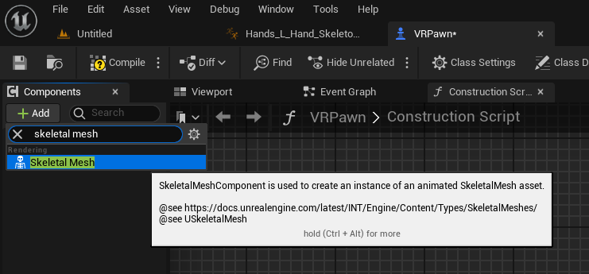
7. In the Details panel under the Animation setting, set the Anim Class to the AnimBlueprint you created
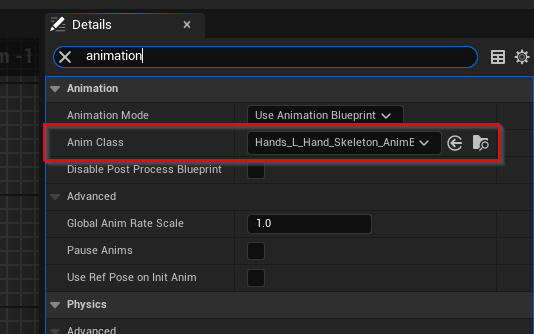
8. In the Details panel under the Mesh setting, set the Skeletal Mesh to the Hand skeletal mesh
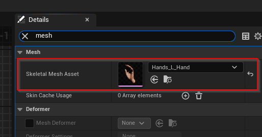
9. Compile and Save the Pawn Blueprint. Navigate back to the Level you created.
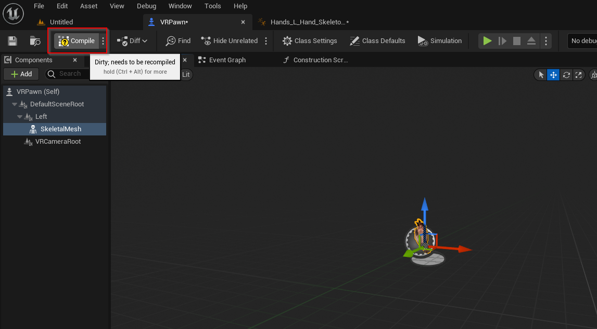
10. Drag the Pawn Blueprint from the Content Browser to a level, making sure that it is placed at 0,0,0 in the level.
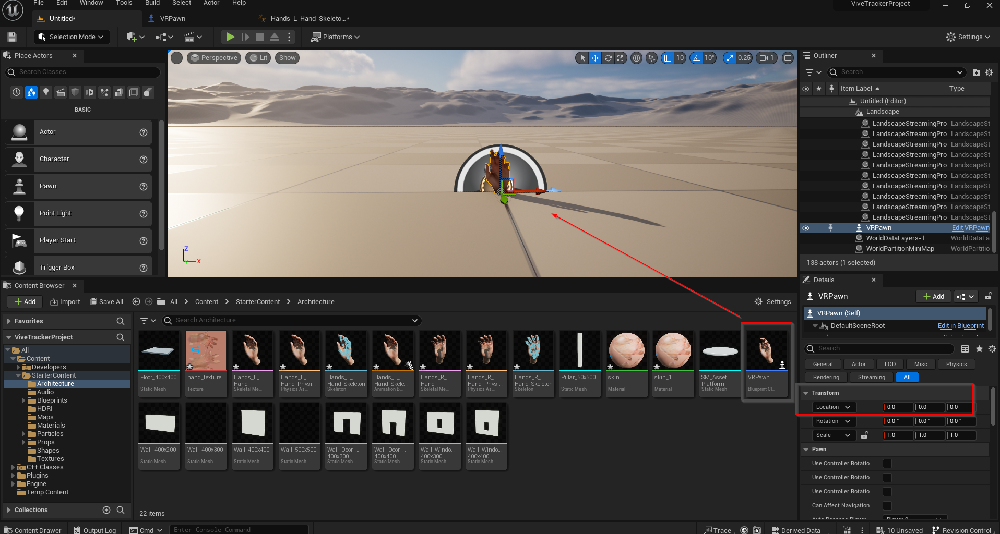
11. Play the Level and there you go You have finger tracking and the hand position is tracked by the Vive Tracker!+